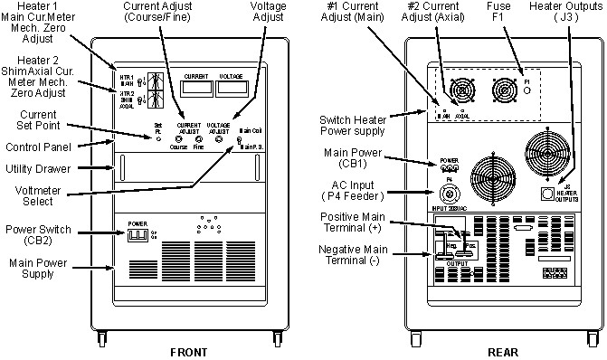
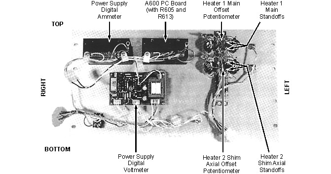
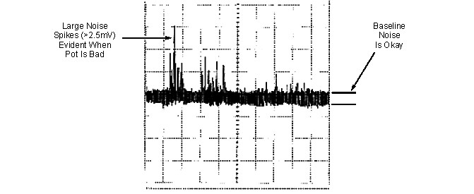
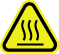
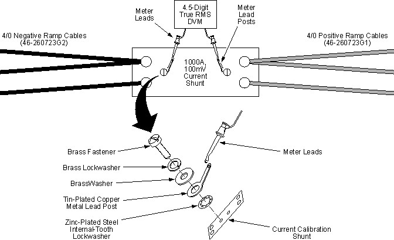

Operating Documentation
Direction 5500113, Rev# 3
Discovery MR750 3.0T Service Methods
Module Version 2.0, Version Date 4/1/10
Operating Documentation |
| Required Persons | Preliminary Reqs | Procedure | Finalization |
|---|---|---|---|
| 1 | Included in 'Procedure' | 1.5 hours | Included in 'Procedure' |
All ESS7.5-1000-2-D-1236 Main Coil Power Supplies (46-260776G4) should be checked in conformance with the ESS7.5-1000-2-D-1236 Main Power Supply Tests procedure at least once a year. In addition, it could be used when a ESS7.5-1000-2-D-1236 Power Supply is suspected of faulty operation and the supply cannot be sent to an approved calibration/repair facility before it is needed. This document is intended only for MAC Team members who have been trained by a member of the “Power Supply Team".
| Item | Qty | Effectivity | Part# | Manufacturer | |
|---|---|---|---|---|---|
| Brass Master Padlock with Brass Shackle | 1 | - | 46-194427P320 | - | |
| Brass Master Transition Padlock | 1 | - | 2387081 | - | |
| Black & White on Red Lockout Tag, package of 25 | 1 | - | 46-194427P322 | - | |
| Transition LOTO Tag | 1 | - | 46-194427P313 | - | |
| Line Cord Plug Cover, Plugs ≤ 3 in. (76 mm) wide x ≤ 5.875 in. (149 mm) long, Cords ≤ 1.25 in. (31 mm) dia. | 1 | - | 46-194427P321 | - | |
| 4.5-Digit True RMS Digital Voltmeter (Fluke 87 or equivalent) | 1 | - | - | - | |
| Oscilloscope | 1 | - | - | - | |
| 4/0 Positive Power Cable, red (included in 1000A Ramp Cable Kit with Ground 2353394; see 1000A Ramp Cable Kit with Ground 2353394) | 3 | - | 46-260723G1 | - | |
| 4/0 Negative Power Cable, black (included in 1000A Ramp Cable Kit with Ground 2353394; see 1000A Ramp Cable Kit with Ground 2353394) | 3 | - | 46-260723G2 | - | |
| Power Supply Calibration Kit (see Power Supply Calibration Kit 2101360) | 1 | - | 2101360 | - | |
| Nonmetallic tuning tool | 1 | - | - | - | |
| Item | Qty | Effectivity | Part# | Manufacturer | |
|---|---|---|---|---|---|
| Potentiometer, 5K 10-Turn (included in Power Supply Calibration Kit 2101360; see Power Supply Calibration Kit 2101360) | 1 | - | 46-281468P12 | - | |
| Potentiometer, 100 Ohm 10-Turn (included in Power Supply Calibration Kit 2101360; see Power Supply Calibration Kit 2101360) | 1 | - | 46-281468P26 | - | |
| ||||
| Electrical Shock Hazard | ||||
| Contact with connectors leading to an energized power supply can cause electrical shock. | ||||
| Follow lockout/tagout procedures while making electrical connections to a power supply. See OSHA Lockout-Tagout. |
| ||||
| Electrical Shock Hazard | ||||
| Contact with connectors leading to an energized power supply can cause electrical shock. | ||||
| Follow lockout/tagout procedures while making electrical connections to a power supply. |
Disconnect and lockout/tagout input power to the power supply to be tested. Verify that no voltage is present by using a DVM or equivalent measuring device.
Remove the cover plates to access the meter's mechanical Zero Adjustment Screw (located adjacent to each meter). See Illustration 1.
Illustration 1: ESS7.5-1000-2-D-1236 Superconducting Main Coil Service Power Supply Cabinet (46-260776G4)

Set the Heater 1 Main and Heater 2 Shim Axial Switches to “O" (off).
Adjust each meter's mechanical Zero Adjustment Screw as required to position the meter indicator needle at “0" (zero).
Replace the cover plates.
| ||||
| Electrical Shock Hazard | ||||
| Contact with connectors leading to an energized power supply can cause electrical shock. | ||||
| Follow lockout/tagout procedures while making electrical connections to a power supply. |
Disconnect and lockout/tagout input power to the power supply to be tested. Verify that no voltage is present by using a DVM or equivalent measuring device.
Connect the P3 test connector to the heater outputs J3, located on the rear of the power supply. See Illustration 1.
Remove the eight mounting screws holding the Control Panel to the power supply.
Pull out the Utility Drawer, then place the Control Panel face down on the drawer to expose the component side of the panel.
Connect an external DVM (set to “DC Volts") to the Heater 1 Main Standoffs, located on the component side of the Control Panel. Use the set of standoffs nearest the heater voltmeter. See Illustration 2.
Illustration 2: Rear View, Power Supply Control Pane

Remove lockout/tagout and connect 208 VAC to the AC input connector.
Set the Main Power and Power On Switches to “ON."
Set the Heater 1 Main Switch to “I" (on).
Adjust the #1 Current Adjustment Potentiometer, located on the rear of the power supply, until the external voltmeter reads 24.3 VDC. See Illustration 1.
Adjust the Heater 1 Main Meter Offset Potentiometer, located on the component side of the Control Panel (Illustration 2), until the Heater 1 Main Current Meter reads 810 mA DC.
Set the Heater 2 Shim Axial Switch to “I" (on).
Connect an external DVM (set to “DC Volts") to the Heater 2 Shim Axial standoffs, located on the component side of the Control Panel. See Illustration 2.
Adjust the #2 Current Adjustment Potentiometer, located on the rear of the power supply, until the external voltmeter reads 24.3 VDC.
Adjust the Heater 2 Shim Axial Meter Offset Potentiometer, located on the component side of the Control Panel (Illustration 2), until the Heater 2 Shim Axial Current Meter reads 810 mA DC.
Set the Heater 1 Main and Heater 2 Shim Axial Switches to “I" (off).
Set the Main Power and Power On Switches to “OFF."
On-site voltage calibration of ESS7.5-1000-2-D-1236 power supplies is not required nor are the voltage calibration components readily accessible.
The Voltage Adjustment Potentiometer is checked under “no load" condition. Make sure the Ramp Leads are disconnected and heater output test plug J3 is connected for this test.
| ||||
| Electrical Shock Hazard | ||||
| Contact with connectors leading to an energized power supply can cause electrical shock. | ||||
| Follow lockout/tagout procedures while making electrical connections to a power supply. |
Disconnect and lockout/tagout input power to the power supply. Verify that no voltage is present by using a DVM or equivalent measuring device.
Verify that the Ramp Leads are disconnected.
Verify that the P3 test connector is plugged into heater outputs J3, located on the rear of the power supply. See Illustration 1.
Measure the resistance, using an ohmmeter, from the Negative Main Terminal to any point on the power supply chassis. The resistance will increase to well within the Megohm range as the output capacitor is being charged by the ohmmeter. Send the power supply to a repair facility if the resistance check indicates a shorted or leaky output capacitor.
Connect the X1 Probe to the Oscilloscope.
Connect the X1 Probe's ground lead to the Negative Main Terminal and the signal lead to the Positive Main Terminal.
Set the Oscilloscope's “Time Base" Control to 5 msec/div (X1 Probe).
Set the Oscilloscope's “VOLT/DIV" Control to 100 mV/div.
Set the input coupling to “AC."
Connect input power to the Oscilloscope and then turn the Oscilloscope power switch on.
Remove lockout/tagout and reconnect input power to the power supply. Turn all power supply breaker switches on.
| NOTE: | The Oscilloscope beam will move upward and downward as the Voltage Adjustment Control is adjusted. |
Adjust the Voltage Adjustment Potentiometer through its full range of operation while observing the Oscilloscope. The signal should be free from spikes. A bad potentiometer will intermittently display large spikes as the potentiometer is adjusted through its full range. SeeIllustration 3 for an example of a bad pot. Do not confuse spikes or noise seen while the pot is not being adjusted with potentiometer noise.
| NOTE: | A storage type oscilloscope, if properly used, will greatly aid in determining if a pot is excessively noisy. |
| NOTE: | Spikes seen riding on the baseline at regular intervals (baseline noise) are caused by switching circuits in the main power module. Do not confuse these spikes as potentiometer noise. To isolate spikes of < 1 Volt, make the probe and ground lengths as short as possible. |
Illustration 3: Potentiometer Noise

If the potentiometer fails this test, turn off and disconnect input power to the power supply and replace the pot. The Voltage Adjustment Potentiometer (46-281468P12) is 5K 10-turn and is included in Power Supply Calibration Kit 2101360.
Adjust the Voltage Adjustment Potentiometer to minimum (CCW).
Set the power supply Main Power and Power On Switches to “OFF."
The external Current Shunt (2101358) should be replaced or calibrated at least once a year. If dropped, it could be forced out of tolerance and should be replaced. The resistance tolerance of the shunt is ± 0.1%. This means that the power supply output could be 1000 amps ± 1 amps at rated current.
Use a Fluke 87 4.5-digit Digital Voltmeter or equivalent voltmeter (DVM).
Current calibration is checked under “no load" condition. Make sure the Ramp Leads are disconnected for this test.
Verify that the Ramp Leads are disconnected.
Connect input power to the Oscilloscope and then turn the Oscilloscope power switch on.
Connect the P3 test connector to heater outputs J3, located on the rear of the power supply. See Illustration 1.
Set the Main Power and Power On Switches to “ON."
Set the Heater 1 Main and Heater 2 Shim Axial Switches to “I" (on).
Adjust the Current Adjustment and Voltage Adjustment potentiometers to minimum (full CCW)
Remove the snap-on cover plate from the power supply's Current Meter.
Adjust the Current Meter Zero “trim pot" on the lower left corner of the meter to 000.0 Amps. This potentiometer is located behind the snap-on cover plate removed in Step 7. See Illustration 4.
Illustration 4: Power Supply Current Meter Adjustment Potentiometers
Set the Heater 1 Main and Heater 2 Shim Axial Switches to “O" (off).
Set the Main Power and Power On Switches to “OFF."
Connect 3 red 4/0 Positive Ramp Cables (46-260723G1) to the power supply's Positive (+) Main Terminal on the supply's rear (shown in Illustration 1) and 3 black 4/0 Negative Ramp Cables (46-260723G2) to its Negative (-) Main Terminal.
 |
| |||
| Potential Burn Hazard! | ||||
| The power supply's high current capacity can cause heat in excess of 60W at the Ramp Cable to 1000A, 100mV Current Shunt junction if the Ramp Cables are not tightly connected to the Current Shunt. | ||||
| Do not wear rings or other jewelry while performing this portion of the checkout procedure. Make sure the Ramp Cables are tightly connected before performing the following two steps. |
| ||||
| Place the Current Shunt on brick or ceramic material to avoid heat damage to tile or carpet. | ||||
Tightly bolt the other end of all three Positive (+) Ramp Cables to one side of the 1000 amp 100 mV Current Shunt. See Illustration 5.
Tightly bolt the other end of all three Negative (-) Ramp Cables to the other side of the 1000 amp 100 mV Current Shunt. See Illustration 5.
Illustration 5: Current Shunt Connections

Set the Heater 1 Main and Heater 2 Shim Axial Switches to “O" (off).
Adjust the Voltage Control Potentiometer to maximum (full CW). Make sure the Current Adjustment Potentiometers are set to minimum (full CCW).
Install the Meter Lead Posts, fasteners and washers to external Current Shunt as shown in Illustration 5. Make sure Meter Lead Post fasteners are tight.
Connect a 4.5-digit true RMS Digital Voltmeter (DVM) to the Meter Lead Posts on the Current Shunt. See Illustration 5.
Set the DVM to read DC millivolts.
Connect the X1 Probe to the Oscilloscope, then connect the X1 Probe's ground lead to the Negative Main Terminal and the signal lead to the Positive Main Terminal.
Set the Oscilloscope “Time Base" Control to 5 msec/div.
Set the Oscilloscope “VOLT/DIV" Control to 100 mV/div.
Set the input coupling to AC.
Set the power supply Main Power and Power On Switches to “ON."
Set the Heater 1 Main and Heater 2 Shim Axial Switches to “I" (on).
Adjust the Current Adjust Fine/Coarse Controls to maximum (full CW). The external DVM should indicate a minimum of 1.0 amp DC.
| NOTE: | Each millivolt increment on the DVM corresponds to 10 amps. Make sure the meter used in the ESS7.5-1000-2-D-1236 Main Power Supply Tests procedure is capable of reading to three decimal places. |
| NOTE: | If this voltage is low, maximum rated current (1000 amps) will not be achievable, and the power supply should be returned for repair. Include a written description of the problem when returning power supplies. |
Adjust the Current Adjustment Controls to obtain a reading of 1.0 VDC on the external DVM. This corresponds to a power supply output of 1000 amps.
Adjust R613, located on the A600 board, to display a reading of 1000 amps on the power supply's digital Current Meter.
If a reading of 1000 amps cannot be achieved, adjust the power supply's Current Meter's “Full Scale" Trim Potentiometer for 1000 amps. See Illustration 4.
When a reading of 1000 amps is achieved, continue with Step 28.
Adjust the Current Adjustment Potentiometers through the full range of operation while observing the Oscilloscope. The signal should be free from spikes. SeeIllustration 3 for an example of a bad pot.
If either potentiometer fails this test, turn off and disconnect the power supply input power and replace the potentiometer. The Coarse Current Adjustment Potentiometer is a 5K 10 turn pot (46-281468P12). The Fine Current Adjustment Potentiometer is a 100 ohm 10 turn pot (46-281468P2). Extra potentiometers are included in the Power Supply Checkout Kit (2101360).
Adjust all Current and Voltage Adjustment Potentiometers to minimum (full CCW).
Set the Heater 1 Main and Heater 2 Shim Axial Switches to “O" (off).
Set the Power On and Main Power Switches to “OFF."
Reinstall the power supply Control Panel.
No finalization steps.